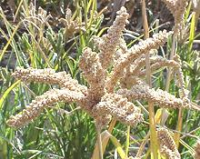

SAFARI
Users
Varieties of Millet
Foxtail Millet:
[Xiao Mi (China); Tinal (India); Setaria italica]
This millet is a major food crop in dry regions of northern China. In North America it is grown on a moderate scale for animal silage and bird seed. In China this millet was in cultivation by 5000 BCE, is known in Europe from around 2000 BCE and was cultivated in Turkey by at least 600 BCE.
Foxtail millet is the most common millet in China today and is a
component of the 4000 year old noodles recently found in China but
cannot be made into noodles alone - other, stickier millets are needed
for adhesion, in this case Proso millet.
Photo of immature seed head by Mark Nesbitt and Delwen
Samuel released into the public domain.
Pearl Millet:
[Dugub (Senegal); Bajri (India); Pennisetum glaucum]
Originating in tropical Africa, this millet was in cultivation in India by 2000 BCE. This millet grows under conditions other grains can not, and is an important crop in areas where the soil is poor and salty and the climate dry and hot. It now account for about 50% of the millet grown worldwide. Photo by US Federal Government = public domain.
This millet is very good as poultry food and is fed to chickens so
they'll lay the high Omega-3 eggs sold to the health conscious, and is
sold as a substitute for wheat for persons with wheat intolerance. It
can be most commonly found in markets serving communities from the
Indian subcontinent and Africa.
Proso Millet
[Common millet, Broom corn millet, White millet, Hog millet; Siao mi (China); Panicum miliaceum | Little Millet Panicum sumatrense]
Cultivation appears in both the Caucasus and eastern China about 5000 BCE. It is the second most common millet in China today. The seeds are small, about 0.1 inch (2 to 3 mm) and vary in color from cream to yellow to orange-red and brown.
Proso millet is grown mainly as animal fodder and bird seed in North America, the former Soviet Empire and South America. In India it is an important food crop, but it is not grown in Africa. Like Pearl Millet it is sold in North America for use by persons with wheat intolerance. Photo by Kurt Stüber distributed under license GNU Free Documentation License v1.2.
Little Millet is very similar but smaller with seeds 1.8 to 1.9 mm
long. It is very tolerant of growing conditions and most grown in
central India.
Glutinous Millet
[Foxtail Millet; Setaria italica | Proso Millet; Panicum miliaceum | Barnyard Grass; Echinochloa villosa]
There are a number of "glutinous millets", none of which contain any gluten. They are simply cultivars of regular millets that have close to 100% amylopectin starch, while the regular ones are about 80%, amilopectin with the rest amylose. The high amylopectin content causes them to cook very sticky. The the 4000 year old noodles found in China were made from Foxtail Millet with enough glutinous Proso Millet to hold them together.
The grains shown in the photo are common in Korean markets here
in Los Angeles and are probably a variety of Foxtail Millet. The
seeds are tiny about 0.05 inch (1.3 mm) and are dark and greenish in
color. A Chinese glutinous millet, Echinochloa villosa, has
quite large 0.16 inch (4 mm) reddish seeds and has been cultivated in
northern China since the Neolithic. In Europe and North America it is
considered a serious invasive.
Finger Millet
 [Ragi (S. India); Juar, Jowar, Bajra (Hindi); Dagusa (Ethiopia); Hong mi, Chi ke (Viet); African millet; Eleusine coracana]
Native to the Ethiopian and Ugandan highlands, this millet was introduced into India by 2000 BCE and is now grown in the Himalayas up to an elevation of 7500 feet (2,300 meters). It is often intercroped with legumes for better yield. This millet has very good storage properties so it can be held (in the husks) for times of shortage.
This millet is used in hundreds of ways throughout the Indian
subcontinent, including in the making of beer. It is also much eaten
and made into beverages by the Humong people of Vietnam.
Photo by US Federal Government = public domain.
Sorghum
 [Milo, Broom Straw, Sorghum bicolor]
[Milo, Broom Straw, Sorghum bicolor]
Some people classify Sorghum as a "millet", but most do not, and we
do not classify it as "millet" here. For details, see our
Other Grains page.